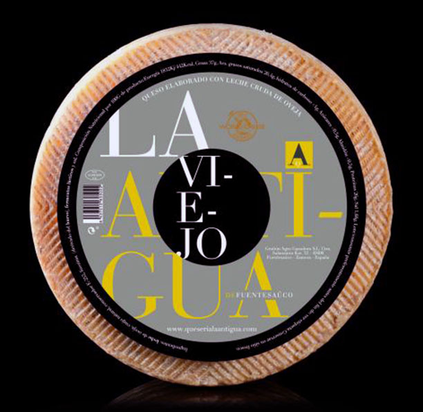

|  | Formatge d'Ovella amb sabor i aroma molt evolucionada, intens i molt complex, amb una alta persistència en boca. Elaborat a partir de la millor llet d'ovella crua de ramats autòctons de la zona pasturats tradicionalment i que li confereix al formatge aqueix sabor autèntic i intens. Afinat durant 7-9 mesos en els quals la floridura floreix en la seua escorça natural intensificant fins i tot més les seues aromes. Afinat: 7-9 mesos Pes *aprox: 3,000 kg |